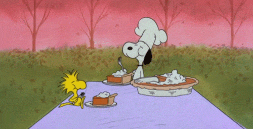

11/01/23
wake up, it's the first of the month!!
tonight is the last night before i turn this website portfolio in! i think all i have left is to fix my contact page, and then add more writing for my portfolio projects. i'm still debating if i want to create a link for each project. i think it will be manageable, but i have been pulling so many all nighters lately, im ready to check out. this november will be my last thanksgiving as senior here at USF which is so SO crazy to me!! nonetheless, im super excited to see my mom soon and my friends and family for thanksgiving. we're gonna go see a bunch of shows and sports games and eat yummy food and i cant cant wait! cheers to a crispy november.
10/31/23
happy halloween!!
it's halloween but why don't i feel like im in the halloween spirit!! the leaves are falling, the pumpkins are out, the air smells crisp and yummy-- and i can't get in the spirit. i watched hocus pocus with my roommate the other day and i realized how much my humor has changed because it wasn't as funny as i remembered. anyways, this was really just a rant post because im struggling to code this website a bit. hope you're having a wonderful day.
10/23/23
hello world!
this is my first entry. this coding stuff is getting really hard now, but i love seeing the ends results. how do you like my borders? i kept them from my first project hehe. saving your old files does come in handy i guess.